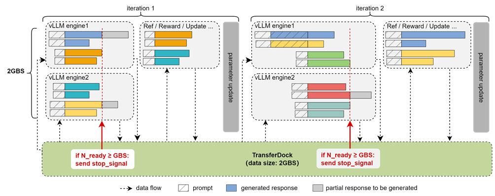
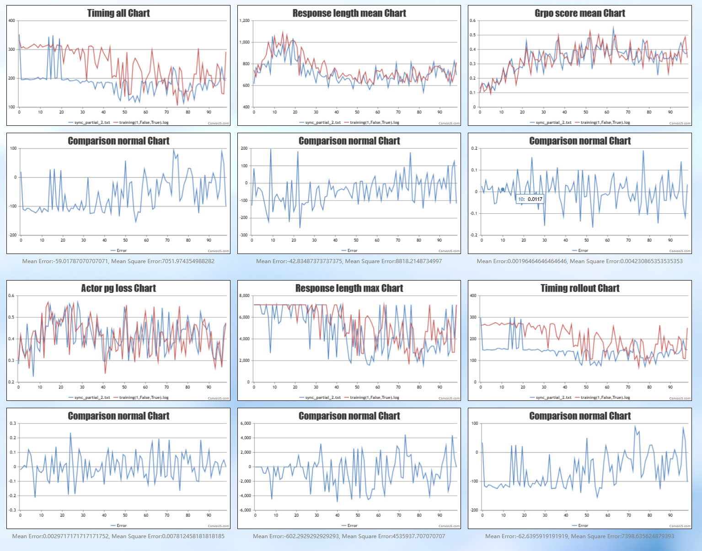

00全景与读法
一次 GRPO/RLVR 迭代分两段：rollout（用当前策略采样大量轨迹）与 train（用样本更新策略）。原文的核心命题是：rollout 普遍占 RL 单步 70% 以上的 wall-clock，这不是框架实现不佳，而是自回归生成本身低算术强度、强串行、长尾敏感，落在加速卡最不擅长的负载区间。2026 上半年一批工作从两条线同时压这个瓶颈：线一把 rollout 量化到 FP8/INT8（Jet-RL、FP8-RL、Quantized Rollout，7B–32B 上吞吐 +20–80%）；线二异步解耦并稳定化（GAC 梯度对齐、staleness 受限协调、周期性异步、APRIL 主动截断）。两条线恰好对应昇腾的两个痛点：Ascend 950 的原生 FP8，以及 910B 上无 sleep-mode 的显存争用。原文的结论是——RL 系统的研究方向，正在朝着对 NPU 最友好的方向发展。
每一节固定三段：叙事怎么说（左栏，灰）/ 证据是什么（右栏，橙）/ 本站判断（下方色块）。数字按来源分三类标注：第三方 独立测量或多方一致、自报 论文或厂商口径、推断 本站分析。原文已明确：全部收益数字为论文自报、provisional，跨模型/序列长度/硬件不可直接外推——本文全程保留这一限定。
一条贯穿全文的线索：rollout 的三个痛点（时间、长尾、显存）与两条主线之间是一对一的对应关系。量化针对 memory-bound 的带宽瓶颈与显存占用，异步解耦针对同步点造成的利用率损失，APRIL 针对长尾——理解了痛点的结构，两条线的取舍就清楚了。
01Rollout 成为共同焦点的原因
rollout 是自回归生成，慢、长尾、且占用大量显存。原文列出三个痛点：时间——rollout 普遍占 RL 单步 70% 以上的 wall-clock，它才是真正的瓶颈，不是反向传播；长尾——同一 batch 里少数超长轨迹拖住整组（APRIL 等工作专门解决这一问题）；显存——推理引擎的 KV cache 与权重要常驻，CUDA 上可以靠 vLLM 的 sleep-mode 在 train 阶段释放，昇腾目前没有这个机制（见 NPU 架构页的"RL 显存争用"视图）。于是 2026 H1 的 RL 系统工作基本沿两条线展开。

这张图怎么读
先看左侧的环：Rollout → Train → 权重同步，再以虚线"下一轮"回到 Rollout。这个环里有两个隐含的同步点——Train 要等 Rollout 全部完成，Rollout 要等权重同步完成——第 05 节的异步解耦就是把这两个点拆开。
再看三条从 Rollout 引出的箭头：三个痛点全部挂在 Rollout 上，没有一条挂在 Train 上。这就是原文"瓶颈不是反向传播"的图示化表述。三个痛点分别对应后文的三个解法：时间对应量化（提高 decode 带宽效率）、长尾对应 APRIL（主动截断）、显存对应 FP8/INT8 的占用缩减（昇腾上替代 sleep-mode 的部分功能）。
叙事怎么说
"训练"是计算最重的环节——反向传播要算梯度、过整个参数，RL 的开销主要在 trainer 侧；rollout 只是推理，是相对便宜的前置步骤。
证据是什么
自报 原文给出的口径是 rollout 普遍占 RL 单步 70% 以上的 wall-clock（综合 2026 H1 的 RL 系统论文，原文未给出单一出处）。第三方 显存侧的事实是硬件与软件栈层面的：CUDA 上 vLLM sleep-mode 可在 train 阶段释放推理侧显存，昇腾目前没有等价机制。
本站判断"70% 以上"是一个综合口径而非单篇论文的测量，引用时应保留"普遍"这一限定。但三个痛点中的显存一条对昇腾是确定性的结构约束：只要没有 sleep-mode，rollout 与 train 就在同一份 HBM 上争用——这使得任何缩减 rollout 显存占用的手段（量化）在 NPU 上的价值高于在 GPU 上。
02为什么 rollout 占 70% 而不是反向传播
原文用两阶段计算结构的差异回答这一问题。train 是一次性的大矩阵乘、compute-bound：给定一个 batch 的轨迹，前向 + 反向是深度固定、可完全并行的稠密计算图，所有 token 的 loss 一次性算完、梯度沿计算图回流一次，Tensor Core 利用率很高——这恰是加速卡最擅长的负载。rollout 是自回归逐 token 生成、memory-bound：生成第 t 个 token 必须等第 t−1 个算完（数据依赖，无法在序列维并行），每生成一个 token 只做一次计算量很小的前向（decode 阶段 batch×1×hidden 的矩阵乘），算术强度极低、大部分时间花在把权重和 KV cache 从 HBM 搬进计算单元上，算力此刻闲置、真正瓶颈是显存带宽；一条长度 L 的轨迹要串行执行 L 次 decode step，通常达几十到上百步。

这张图怎么读
这张图把第 01 节的抽象环落到了实际组件上。左右两个引擎就是 train 与 rollout 两段：Model Engine 跑的是 compute-bound 的稠密反向传播（FSDP/Megatron-Core），Rollout Engine 里的 LLM Server 跑的是 memory-bound 的自回归 decode（vLLM/SGLang/TensorRT-LLM）。两者是完全不同的软件栈——这正是原文"两阶段计算结构根本不同"的工程体现，也是 train-inference mismatch（第 04 节）产生的物理位置：两侧的算子实现、精度路径可以不一致。
最值得看的两条连线是底部的权重同步与中间的样本队列。CheckpointEngine 之间的 broadcast/p2p 箭头对应图 1 的"权重同步"，每一步都要把新策略推回采样引擎——线一的难点 H1（"策略每步在变，要反复量化并同步权重进引擎"）就发生在这条线上。TransferQueue 让 rollout 产出的样本异步流向 trainer，这是线二异步解耦的载体；上层 Trainer 列出的 Full async 与 One-step-off-policy 正是不同 staleness 允许度的两种模式。此外，Rollout Engine 上方的 AgentLoop（SingleTurn / ToolAgent / SWEAgent）说明长尾轨迹在多轮 agent 场景中会进一步放大。
叙事怎么说
rollout 慢是因为推理引擎与 RL 框架的集成"未充分优化"，随着工程成熟，rollout 占比会自然下降。
证据是什么
推断 原文的论证是结构性的：串行步数差 O(1) 对 O(L)、算术强度方向相反、同步点使耗时由最慢轨迹决定、KV cache 随长度线性增长。四条理由都不依赖某个具体实现的好坏。原文没有给出某一框架上 compute-bound/memory-bound 的实测利用率数字。
本站判断原文结论是：rollout 慢不是"未充分优化"，而是它是一个低算术强度、强串行、长尾敏感的负载。这直接决定了两条主线的靶点——FP8/INT8 量化针对 memory-bound 带宽瓶颈，异步解耦让生成器满负荷不被同步点拖住——而不是去优化已充分利用算力的反向传播。工程上的推论是：任何"提升 trainer 效率"的投入，在 rollout 占 70% 的前提下对端到端提速的上限只有约 30%。
03线一：把 rollout 量化下去（FP8 / INT8）
核心直觉：rollout 是推理，推理可以用低精度。难点是 RL 里策略每步都在变——要反复量化、把权重同步进推理引擎，还得防止低精度 rollout 与高精度 trainer 之间的 train-inference mismatch 破坏训练稳定性。原文列出三项代表工作：Jet-RL（统一训练与 rollout 的精度流，做 on-policy FP8 RL，让 FP8 rollout 与 trainer 数值一致、消除 mismatch）；FP8-RL（veRL 生态里的实用 FP8 栈，FSDP/Megatron + vLLM/SGLang，工程 + 算法手段稳住 FP8 RL 循环）；Quantized Rollout（仅对 rollout 做 INT8/FP8 量化，7B/14B/32B 上吞吐 +20–80%）。

这张图怎么读
看两个反向箭头。第一条是 W → Q → ENG 的正向精度流；第二条是 JET → W 的回边——Jet-RL 不只作用在采样侧，而是把量化逻辑同时写进 trainer 一侧，让两侧走同一条数值路径。图中只有 Jet-RL 有这条回边，FP8-RL 与 Quantized Rollout 没有：这对应三者的定位差异——Jet-RL 从根上消除 mismatch，Quantized Rollout 只改 rollout 侧、容忍可控 mismatch。
再看难点 H1 与 H2 的分工：H1（反复量化并同步权重进引擎）是工程成本，每一步都要付；H2（mismatch）是稳定性风险，一旦发生会破坏训练。三项工作中只有 H2 有后续箭头，说明原文认为 H2 才是决定这条线能否成立的关键，H1 是可以用工程手段摊薄的成本。
叙事怎么说
推理量化是成熟技术，FP8/INT8 rollout 只是把成熟的推理量化搬进 RL 循环，收益等同于推理侧的吞吐提升。
证据是什么
自报 Quantized Rollout 在 7B/14B/32B 上吞吐 +20–80%（arXiv 2602.13953）；Jet-RL（2601.14243）与 FP8-RL（2601.18150）的定位分别是数值一致与生态工程化，原文未给二者的吞吐数字。所有数字为论文自报、provisional，跨模型/序列长度/硬件不可直接外推。
本站判断三项工作构成一个激进程度的谱系：Quantized Rollout 改动最小（trainer 不变），Jet-RL 改动最深（两侧统一精度流），FP8-RL 居中（生态工程化）。原文的意义判断是：rollout 既然占 70% 时间，将其精度减半、吞吐翻倍，就是对整条 RL 管线最直接的提速；而 Ascend 950 原生支持 FP8/MXFP4，是把这套量化 rollout 搬到 NPU 的硬件前提。
04train-inference mismatch：量化 rollout 的隐藏风险
RL 比纯推理对低精度更敏感，原因不在输出 token 而在 logprob。纯推理只关心输出 token（argmax 或采样落到哪个词），FP8 使某个 logit 轻微抖动、只要不翻转 top token 排序输出几乎不变，所以推理场景可以放心量化。RL 要把 logprob 喂回梯度：GRPO/RLVR 的核心是重要性比 ratio = π_new/π_old = exp(logπ_new − logπ_old)——π_old 是 rollout 采样时用 FP8 推理引擎算的 logprob，π_new 是 trainer 用更高精度（BF16/FP32）重算同一条轨迹的 logprob，理论上同策略同轨迹两者应相等、ratio≈1。
叙事怎么说
低精度本身有害：FP8 精度不够，所以 RL 不能用 FP8 做 rollout；要安全就只能保持 BF16。
证据是什么
推断 原文的机制论证：不是精度低本身有害，而是采样侧和训练侧精度/算子路径不一致才有害。若两侧量化误差是"同一份"，它在 ratio 里相互抵消。Jet-RL 的做法正是统一两侧精度流、做 on-policy FP8，从根源消除 mismatch，而非事后用 clip/修正补救；Quantized Rollout 则以容忍可控 mismatch 换 +20–80% 吞吐。
本站判断这一节是全文最重要的机制说明。它把问题从"精度"重新定义为"一致性"——这一重定义对 NPU 有直接后果：昇腾上 FP8/稀疏注意力算子是重写的，采样侧和训练侧很可能不是同一份算子实现，mismatch 更隐蔽（表面 logprob 接近，细微数值路径差异在指数放大下仍可能破坏 ratio）。因此原文要求 NPU 上做量化 rollout 必须用 align-probe 显式验证两侧 logprob 一致性，而非假定"都叫 FP8 就一致"。
05线二：异步解耦，再把它稳住
另一条线直接把 rollout 和 train 解耦成异步流水，让生成器一直跑、训练器消费稍旧的样本——吞吐上去了，但样本"陈旧"（staleness）会让重要性权重出现重尾、把 GRPO/REINFORCE 带偏。所以 2026 H1 的重点从"做异步"转向了"把异步做稳"：GAC（Gradient Alignment Control）对齐异步产生的梯度方向、抑制不稳定；Staleness-Constrained Rollout Coordination 给样本陈旧度设上界，在高异步度下保持可控；Periodic Asynchrony 用"周期性"的近 on-policy 方式拿异步的吞吐、还原 on-policy 的稳定；APRIL（Active Partial Rollouts）主动截断长尾生成，解决 rollout 的长尾问题。这些与看板 RL 标签下已有的 Stable Asynchrony、RollMux、AsyncFlow、ROLL Flash 是同一条系统脉络。

这张图怎么读
自上而下是一条问题转移链：同步基线的问题是利用率（S2），解耦后利用率问题消失、但换来了 A3 的 staleness 问题，四个手段全部从 A3 引出。也就是说，线二并没有消灭问题，而是把一个硬件利用率问题换成了一个统计问题——后者可以用算法处理，前者不能。
四个手段并列出现，但它们压的位置并不相同（第 06 节展开）：GAC 在梯度层，Staleness 约束在样本准入层，Periodic Asynchrony 在调度层，APRIL 在生成层。读这张图时应注意 APRIL 的特殊性——它是四者中唯一同时也解决同步基线问题（S2 的长尾等待）的手段，因此在同步与异步两种模式下都有价值。
叙事怎么说
异步 RL 的问题在于"如何实现异步"——只要把 rollout 与 train 拆成两个进程池、用队列连接，吞吐就上去了。
证据是什么
自报 2026 H1 的四项工作（GAC 2603.01501、Staleness-Constrained Coordination 2601.12784、Periodic Asynchrony 2511.18871、APRIL 2509.18521）全部聚焦稳定化而非异步实现本身，说明"做异步"已不是研究问题，"做稳"才是。原文未给出这四项工作的具体吞吐或稳定性数字。
本站判断研究重心从"做异步"到"做稳"的转移，意味着异步流水已是默认架构，争议点只剩 staleness 的允许度。对 NPU 的含义在第 07 节：异步解耦需要一个能同时驾驭生成与训练的调度底座，原文指出 MindSpeed-RL（vLLM-Ascend 生成 + MindSpeed 训练）是现成底座。
06异步的根本矛盾：吞吐 vs on-policy
同步 on-policy 最干净但利用率低：标准 GRPO 一轮是全 batch rollout 完 → train → 再 rollout，样本永远来自当前策略、理论最干净，代价是同步点——rollout 阶段设备因长尾轨迹空等、train 阶段推理引擎闲置，整体利用率被结构性压低。异步解耦把吞吐拉上去但引入 off-policy：生成器持续满负荷产样本，trainer 消费稍旧样本、不等生成器，卡利用率上去了，但 trainer 此刻用的样本来自几步之前的旧策略——这就是 staleness；staleness 一大，π_old（产样本的旧策略）和 π_new（当前训练策略）拉开，重要性比 π_new/π_old 分布变重尾（少数样本拿到极大权重、梯度估计方差爆炸、GRPO/REINFORCE 被带偏）。

这张图怎么读
看红色虚线的位置。它是每个迭代内 rollout 的截止线：线左侧的样本已完成，右侧的灰色段是"本轮不再等它"的部分响应。没有这条线时，iteration 1 的耗时由 engine1 最上方那条最长的灰色样本决定——这正是原文所说"batch 的 rollout 耗时不是平均值而是被最慢那条决定"。有了这条线，rollout 在 N_ready ≥ GBS 时即结束，长尾样本的剩余部分推到 iteration 2 续推（图中 iteration 2 里带斜纹加长条的样本）。
再看底部绿色的 TransferDock：它同时承担样本缓存与"何时停"的判定，其角色与图 2 中 verl 的 TransferQueue 对应。值得注意的是，续推样本的前半段由旧策略生成、后半段由新策略生成——这本身就是一种受控的 staleness，因此这类方案必须配合"在规定迭代轮数内完成推理"的约束（MindSpeed-RL 文档以 partial_rollout_max_split 设定轮数上限），这与原文所述 Staleness 上界的思路同向。此图证明"主动截断长尾"已有昇腾侧的工程实现，但该文档对应的是 MindSpeed-RL 自身方案，不是 APRIL 论文的复现。

这张图怎么读
这张图要分两组读。第一组是耗时：左上 Timing all 与右下 Timing rollout 两个面板中，蓝线（partial rollout）在大部分步数上明显低于红线（基线），对照图给出的平均误差分别约 −59 与 −62（单位与面板纵轴一致，该仓库自报）——即截断长尾确实缩短了 rollout 与单步总时长。第二组是训练质量：Response length mean、Grpo score mean、Actor pg loss 三个面板的蓝红两线基本重叠，对照图的平均误差接近 0（Grpo score 约 0.002、pg loss 约 0.003）。
最值得看的是 Response length max 面板：基线红线在前约 30 步几乎贴着 7,000 左右的上限，而蓝线波动更大、多次跌到 2,000–4,000——这就是截断在起作用的直接证据，也是这类方法风险所在：若截断改变了长样本的分布，score 曲线理应偏离，而此处 score 曲线未偏离，说明在该实验设定下截断并未损伤收敛。注意这是单一配置、单一仓库的自报验证，不能外推到 APRIL 或其他截断方案；原文关于 APRIL 的描述只到"主动截断长尾生成"，没有给出任何数字。
叙事怎么说
异步度越高越好：只要 trainer 不等生成器，卡利用率就最大化，staleness 可以靠重要性采样修正。
证据是什么
推断 原文指出重要性比在 staleness 大时变重尾、方差爆炸，重要性采样本身就是失稳的来源而非解药。存在一个临界点：超过它训练带偏的损失超过吞吐收益。原文未给出这一临界点的数值，并把"staleness 上界/周期性异步究竟能容忍多旧的样本"列为待观察项。
本站判断调优异步流水线的本质是把"够用阈值"控制在"样本够新到不破坏梯度、又够异步到不浪费算力"的窗口里。四个手段中，APRIL 值得单独关注：长尾超长轨迹既拖慢 rollout 又是 staleness 的主要制造者，主动截断是唯一同时压两个变量的手段——图 5、图 6 说明昇腾底座上已有同思路的工程实现与自报验证，但 APRIL 论文本身在 NPU 上的复现原文未提及。
07这对 RL-on-NPU 意味着什么
把两条线叠在昇腾的现实约束上，原文给出四条结论。量化 rollout 直接缓解显存争用：昇腾没有 sleep-mode、rollout 与 train 争用同一份 64GB HBM；FP8/INT8 的 rollout 占用更小，等于绕开了一部分"无法释放 KV cache"的痛点，是把 GPU 上的量化-rollout 配方移植到 NPU 的最高性价比方向。Ascend 950 的 FP8 让"FP8 RL on Ascend"从设想变可行：Jet-RL/FP8-RL 这类配方 + 950 原生 FP8，是一个新颖度高、已有工作少的选题。但需关注数值漂移：FP8 rollout 以及自定义稀疏注意力（DSA/MSA/CSA）在 NPU 上重写后，train-inference mismatch 会更隐蔽——这正是看板里 align-probe 这个想法应承担的职责，在 NPU 上量化 train-inference 的 log-prob 偏差。MindSpeed-RL 是现成底座：华为已开源的 MindSpeed-RL（910B、384-NPU 上跑过 DeepSeek-R1-671B）用 vLLM-Ascend 做生成、MindSpeed 做训练，量化 rollout 与异步稳定化正好可以接在它上面做实验。

这张图怎么读
注意箭头的不对称：线一有两条出边（N1 显存、N2 FP8），线二只有一条（N3 底座）。这反映原文的判断——量化 rollout 对昇腾是"机会 + 痛点"双重命中（既用上 950 的新硬件能力，又绕开无 sleep-mode 的旧痛点），而异步稳定化对昇腾是中性的（需要底座支撑，但没有 NPU 特有的收益）。
风险链只从 N2 引出：950 原生 FP8 → 重写算子 → mismatch 更隐蔽 → align-probe。也就是说，机会越大的那条线风险也越集中。align-probe 在图中处于末端，是整个 NPU 落地方案的验证闸门：没有它，"都叫 FP8 就一致"的假定无法被证伪。
叙事怎么说
RL 系统研究围绕 CUDA 生态展开（vLLM sleep-mode、CUDA 算子），NPU 只能跟随移植，缺少原生优势。
证据是什么
第三方 Ascend 950 原生支持 FP8/MXFP4 为硬件规格；MindSpeed-RL 已开源并在 910B、384-NPU 上跑过 DeepSeek-R1-671B（arXiv 2507.19017，华为自报）。推断 "FP8 RL on Ascend 是新颖度高、已有工作少的选题"与"量化 rollout 是最高性价比方向"均为原文判断，尚无端到端 FP8 RL on Ascend 的公开结果。
本站判断原文的核心论断是：RL 系统的研究方向正在朝着对 NPU 最友好的方向发展——量化 rollout 使显存痛点减轻、950 使 FP8 成为可能。但这一论断成立的前提是 mismatch 可控，而 NPU 上算子重写使 mismatch 更隐蔽，因此 align-probe 不是可选项而是前置条件。"最高性价比"是相对判断，原文未给出成本或收益的量化估算。
08叙事 vs 证据：一页总表
| 主题 | 叙事怎么说 | 证据是什么 · 本站判断 |
|---|---|---|
| 瓶颈位置 | 反向传播最重，rollout 是便宜前置步 | rollout 普遍占单步 70% 以上 wall-clock（综合口径）；三个痛点全部挂在 rollout 上（图 1） |
| 瓶颈性质 | rollout 慢是集成未充分优化 | O(1) 对 O(L) 串行步数、compute-bound 对 memory-bound、barrier 由最慢决定、KV cache 线性增长——结构性而非实现问题 |
| 线一收益 | 等同推理量化的吞吐提升 | Quantized Rollout 7B/14B/32B +20–80%（自报，provisional）；Jet-RL/FP8-RL 原文未给吞吐数字 |
| mismatch | 低精度本身有害 | 有害的是两侧数值路径不一致；ratio 对 logprob 差指数敏感（差 0.1 偏 10%、差 0.7 翻倍）；Jet-RL 统一两侧精度流从根源消除 |
| 线二重心 | 问题在如何实现异步 | 四项工作全部聚焦稳定化；"做异步"已是默认，争议点只剩 staleness 允许度 |
| 异步度 | 越高越好，靠重要性采样修正 | staleness 大时重要性比重尾、方差爆炸；存在临界点，原文未给数值 |
| 长尾 | 是 rollout 的次要问题 | APRIL 主动截断同时压 rollout 瓶颈与 staleness 来源；昇腾侧 MindSpeed-RL 已有同思路实现（图 5、6，自报） |
| NPU 位置 | 只能跟随 CUDA 移植 | 量化 rollout 双重命中昇腾（950 原生 FP8 + 绕开无 sleep-mode）；风险集中在重写算子的隐蔽 mismatch，align-probe 为前置条件 |
| 底座 | NPU 上缺少可用 RL 框架 | MindSpeed-RL（910B、384-NPU、DeepSeek-R1-671B，自报）以 vLLM-Ascend 生成 + MindSpeed 训练，两条线均可接入 |
09原文没给的东西 / 未能核实的东西
以下是复现或引用时必须自行确定、或原文未给出理由与数据的项目：
- "70% 以上"的出处与测量条件：原文为综合口径（"普遍"），未给出具体框架、模型规模、序列长度下的实测分解；
- Jet-RL 与 FP8-RL 的吞吐与稳定性数字：原文只给机制与定位，未给收益数字；Quantized Rollout 的 +20–80% 为论文自报，未经独立复现；
- Quantized Rollout "可控 mismatch"的可控边界：容忍多大的 logprob 偏差不破坏训练，原文未给阈值；
- 异步"够用阈值"的数值：staleness 上界与周期性异步能容忍多旧的样本，原文明确列为待观察项；GAC、Staleness-Constrained、Periodic Asynchrony、APRIL 四项工作的实验数字原文均未给出；
- align-probe 的具体判据：两侧 logprob 一致性的可接受偏差量级、监控频率，原文只给职责定义；
- MindSpeed-RL 的 DeepSeek-R1-671B 运行数据：910B、384-NPU 为华为自报（arXiv 2507.19017），原文未给吞吐或利用率；
- 端到端 FP8 RL on Ascend 950：原文明确为尚未有人完成并公布的空白，是"新颖度高、已有工作少"判断的依据；
- 本文原图 2 张取自 Ascend/MindSpeed-RL 仓库的 partial rollout 文档、1 张取自 verl 仓库 README，均非原文直接引用；原文所引 arXiv 论文（Jet-RL 2601.14243、FP8-RL 2601.18150、Quantized Rollout 2602.13953、GAC 2603.01501、Staleness-Constrained Coordination 2601.12784、Periodic Asynchrony 2511.18871、APRIL 2509.18521、MindSpeed-RL 2507.19017）的原图受网络代理限制未能获取。
10判断与下一步
一、rollout 瓶颈是结构性的，优化 trainer 的上限约 30%。串行步数 O(L) 对 O(1)、memory-bound 对 compute-bound、barrier 由最慢轨迹决定——三条理由都不随实现成熟而消失。任何端到端提速方案都必须以 rollout 为靶点。
二、量化 rollout 的风险不在精度而在一致性。ratio 对 logprob 差指数敏感，两侧同一份误差可以抵消、不同份误差会放大。NPU 上算子重写使不一致更隐蔽，align-probe 显式验证两侧 logprob 是前置条件，不能以"都叫 FP8"为一致的依据。
三、两条线对昇腾的价值不对称。量化 rollout 同时命中 950 原生 FP8（机会）与无 sleep-mode 的显存争用（痛点），是最高性价比方向；异步稳定化对 NPU 中性，需要 MindSpeed-RL 这类底座承载，且 APRIL 式主动截断在昇腾侧已有同思路实现可作起点。
FP8 rollout 会不会成为 RL 框架的默认项（veRL / ROLL / MindSpeed-RL 是否内置）· 异步稳定化的"够用阈值"：staleness 上界与周期性异步究竟能容忍多旧的样本而不损失效果 · 是否有人在昇腾 950 上完成端到端 FP8 RL 并公布 train-inference 一致性数据——原文认为这会是 RL-on-NPU 最有说服力的一块拼图。